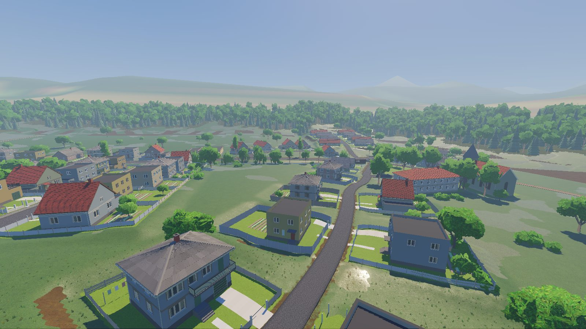
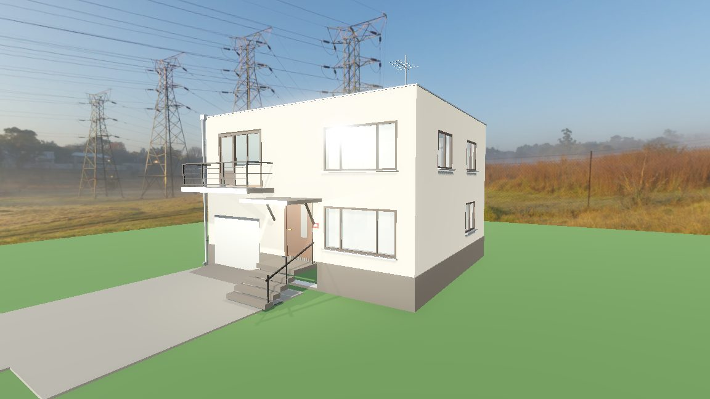
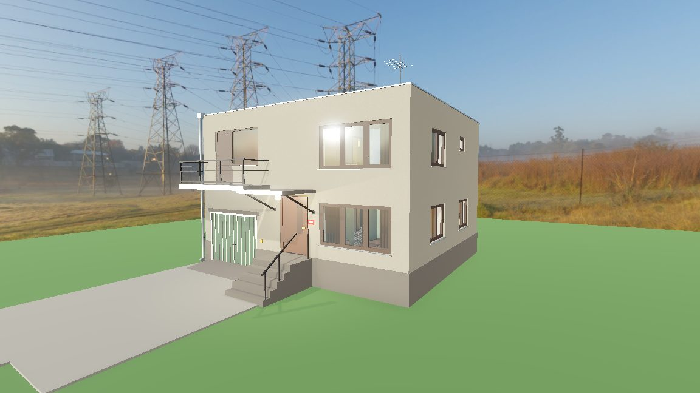
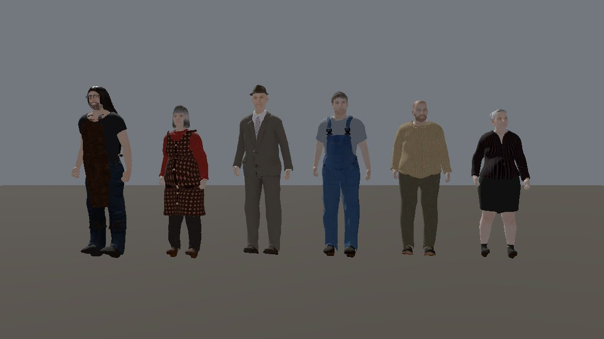
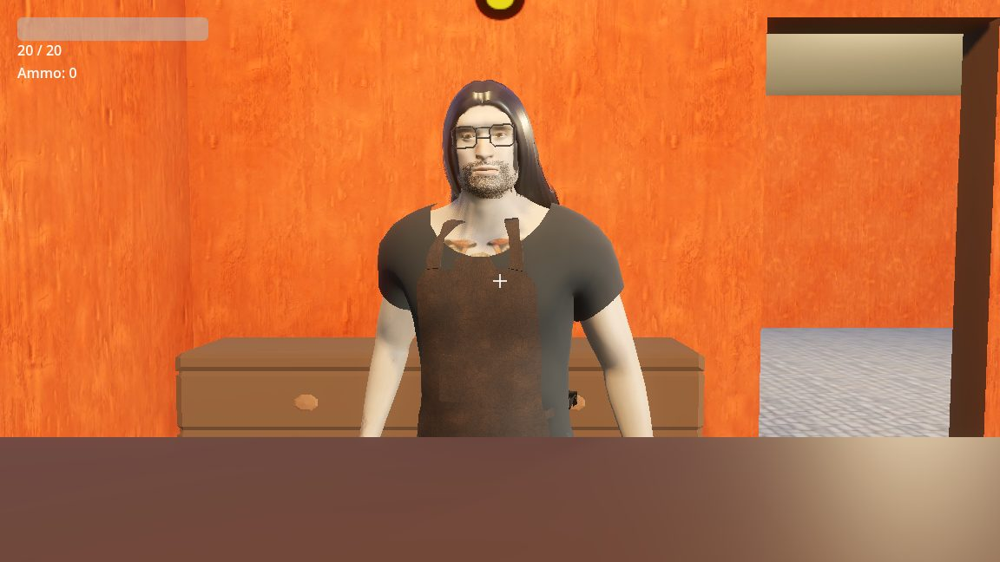
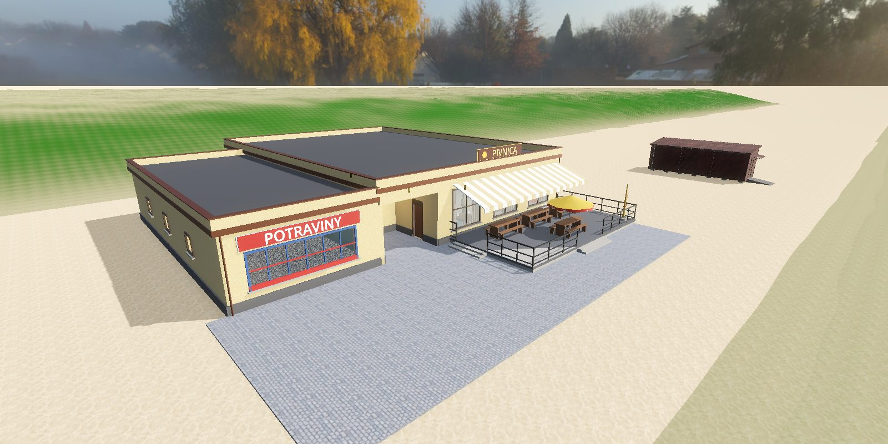
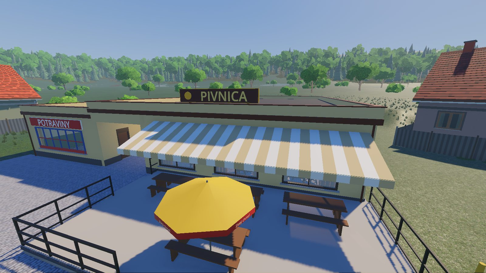
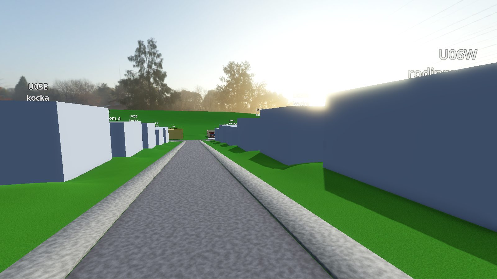
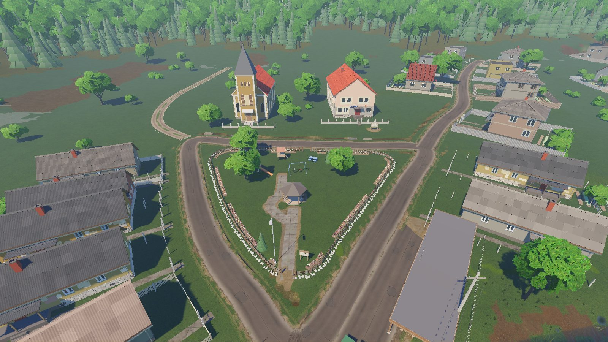

Od kocky k dedineFrom a cube house to a village
Prvý zápis devlogu: čo sa doteraz postavilo, od prvého súbojového prototypu až po dedinu Honce, ktorou sa dá prejsť.
The first devlog entry: what has been built so far, from the first combat prototype to the village of Honce you can walk through.

O čom je hra
GENS je hra z pohľadu prvej osoby zasadená do slovenskej dediny. Hra je rozdelená na dni: ráno vyjdeš z domu, cez deň plníš úlohy, rozprávaš sa s ľuďmi z dediny, občas sa pobiješ a večer sa všetko stretne v krčme. Súboje a questy sú rovnako dôležité. Cieľ je dostať hru do bodu, keď sa nový deň dá pridať len ako obsah: úlohy, dialógy a hlasy, bez nového kódu.
What the game is about
GENS is a first-person game set in a Slovak village. The game is split into days: you leave the house in the morning, do quests during the day, talk to the villagers, get into the occasional fight, and in the evening everything meets in the pub. Combat and quests matter equally. The goal is to reach the point where a new day is pure content (quests, dialogue, voices) with no new code.
Časová os
- júl: prototyp: pohyb, súboj obuškom a hádzaním, nepriatelia, questy, inventár, NPC s titulkami, prvá krčma
- 2.–4. okt.: rodinný dom „kocka“ krok za krokom: dvere, schodisko, garáž, izby, nábytok
- 4.–5. okt.: postavy z MPFB2 so spoločnými animáciami (chôdza, sedenie), krčmár metalista
- 4. okt.: questy, dialógy a NPC riadené dátami (JSON) a hlasy postáv
- 6. okt.: budova Jednoty: potraviny a krčma Pivnica s terasou
- 6.–10. okt.: dedina Honce: terén, cesty, potok, ~100 parciel, náves, kostol, úrad, bufet, stromy
- 10. okt.: prvá „recenzná“ prechádzka dedinou s nástrojom na poznámky (F12)
Timeline
- July: prototype: movement, baton and throwing combat, enemies, quests, inventory, NPC subtitles, the first pub
- Oct 2–4: a socialist "cube" family house, step by step: doors, stairs, garage, rooms, furniture
- Oct 4–5: MPFB2 characters with shared animations (walking, sitting), a metalhead pub keeper
- Oct 4: data-driven quests, dialogue and NPCs (JSON) and character voices
- Oct 6: the "Jednota" building: grocery and the Pivnica pub with a terrace
- Oct 6–10: the village of Honce: terrain, roads, creek, ~100 plots, village green, church, town hall, snack bar, trees
- Oct 10: the first review walk through the village with an in-game note tool (F12)
Dom, v ktorom to začína
Hráč býva v typickej socialistickej „kocke“. Dom vznikal v dvanástich malých krokoch: najprv obal a strecha, potom vchod, okná so sklenenými tehlami, dvere, ktoré sa naozaj otvárajú, schodisko do tvaru U, garáž s posuvnou bránou a nakoniec izby a nábytok. Z rovnakého generátora dnes vznikajú aj ďalšie domy v dedine.
The house where it starts
The player lives in a typical socialist "cube" house. It was built in twelve small steps: shell and roof first, then the entrance, windows with glass blocks, doors that really open, a U-shaped staircase, a garage with a sliding gate, and finally the rooms and furniture. The same generator now builds the other houses in the village.


Ľudia z dediny
Postavy sú generované v MPFB2 (Blender) z „receptov“, takže pridať nového dedinčana znamená napísať pár riadkov: vek, postavu, oblečenie. Všetci zdieľajú jednu knižnicu animácií. Vedia chodiť, sedieť na lavici aj na gauči a rozprávať sa. Najviac práce si vyžiadal krčmár: metalista s plnou bradou, okuliarmi a koženou zásterou.
The villagers
Characters are generated in MPFB2 (Blender) from "recipes", so adding a villager means a few lines: age, build, clothes. All of them share one animation library. They can walk, sit on a bench or a sofa, and talk. The most work went into the pub keeper: a metalhead with a full beard, glasses and a leather apron.



Krčma a Jednota
Krčma je srdce dediny. Sedí v budove Jednoty spolu s potravinami. Pred ňou je terasa so stolmi na pivo, slnečníkom a markízou. Questy, dialógy a správanie postáv sa zapisujú do dátových súborov, nie do kódu, a hlasy sa k nim generujú zvlášť.
The pub and the Jednota
The pub is the heart of the village. It shares the Jednota building with the grocery, and in front there is a terrace with beer tables, an umbrella and an awning. Quests, dialogue and NPC behaviour live in data files, not code, and voices are generated for them separately.


Dedina Honce
Dedina je inšpirovaná skutočnými Honcami. Pôdorys je stlačený, ale charakter ostáva: hlavná cesta pozdĺž potoka, trojuholníková náves s kostolom a obecným úradom, staré dlhé domy na kamennej podmurovke, bytovky, bufet pri ceste. Všetko je generované z jedného dátového súboru a skriptu: terén, cesty s obrubníkmi a priekopami, priepusty, ploty, záhrady, kôlne, ovocné stromy aj elektrické stĺpy. Na začiatku to boli biele kvádre pri sivej ceste.
The village of Honce
The village is inspired by the real Honce. The layout is compressed, but the character stays: the main road along the creek, a triangular village green with the church and town hall, old long houses on stone plinths, blocks of flats, a snack bar by the road. Everything is generated from one data file and one script: terrain, roads with kerbs and ditches, culverts, fences, gardens, sheds, fruit trees, even power poles. It started as white boxes next to a grey road.



Ako to robím
V hre je nástroj na poznámky: pri prechádzke stlačím F12, napíšem komentár a uloží sa screenshot aj presná poloha kamery. Z prvej prechádzky vzniklo 22 poznámok: zle otočený prechod pre chodcov, nápisy, ktoré sa nezmestia na tabuľu, cesty, ktoré do seba neprechádzajú. Z nich vznikol plán malých krokov. Každý krok sa overí screenshotom z rovnakého miesta. Pri práci mi pomáhajú AI agenti: Claude plánuje a kontroluje, Gemini píše väčšinu kódu.
How I work
The game has a note tool: during a walk I press F12, type a comment, and it saves a screenshot with the exact camera position. The first walk produced 22 notes: a zebra crossing turned the wrong way, signs too big for their boards, roads that don't blend into each other. They became a plan of small steps, and each step is checked with a screenshot from the same spot. AI agents help with the work: Claude plans and reviews, Gemini writes most of the code.
Čo ďalej
Najbližšie: plynulé cesty, chodníky a vjazdy, cesty na oboch koncoch dediny, ktoré sa strácajú v lese, hasičská zbrojnica, druhá krčma a domy s lávkami cez potok. Potom príde na rad jeden dvor dotiahnutý do detailu ako vzor pre ostatné. Až keď bude dedina hotová, prídu fyzika a hrateľnosť po dňoch.
What's next
Next up: seamless roads, sidewalks and driveways, roads at both ends of the village that fade into the forest, a fire station, a second pub and houses reached by footbridges over the creek. Then one yard finished in full detail as the template for the rest. Once the village is done, physics and day-by-day gameplay come next.